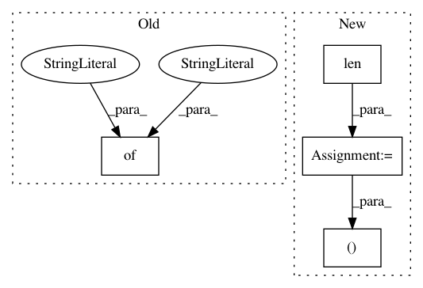

61228f3243eaee39cba31a9abd2afc6ead9612a8,implementations/bicyclegan/bicyclegan.py,,,#,136
Before Change
// Log Progress
// --------------
logger.log({"loss_D_VAE": loss_D_VAE, "loss_D_LR": loss_D_LR,
"loss_G": loss_GE, "loss_pixel": loss_pixel, "loss_latent": loss_latent},
images={"real_B": real_B, "fake_B": fake_B, "real_A": real_A},
epoch=epoch, batch=i)
After Change
// --------------
// Determine approximate time left
batches_done = epoch * len(dataloader) + i
batches_left = opt.n_epochs * len(dataloader) - batches_done
time_left = datetime.timedelta(seconds=batches_left * (time.time() - start_time)/ (batches_done + 1))
// Print log
sys.stdout.write("\r[Epoch %d/%d] [Batch %d/%d] [D VAE_loss: %f, LR_loss: %f] [G loss: %f, pixel: %f, latent: %f] ETA: %s" %
(epoch, opt.n_epochs,
i, len(dataloader),
loss_D_VAE.item(), loss_D_LR.item(),
loss_GE.item(), loss_pixel.item(),
loss_latent.item(), time_left))
if batches_done % opt.sample_interval == 0:
sample_images(batches_done)
In pattern: SUPERPATTERN
Frequency: 3
Non-data size: 4
Instances
Project Name: eriklindernoren/PyTorch-GAN
Commit Name: 61228f3243eaee39cba31a9abd2afc6ead9612a8
Time: 2018-05-04
Author: eriklindernoren@gmail.com
File Name: implementations/bicyclegan/bicyclegan.py
Class Name:
Method Name:
Project Name: nilearn/nilearn
Commit Name: 68e3699215df53a6bd57675c75d937f2d3a75891
Time: 2017-01-19
Author: alexsavio@gmail.com
File Name: nilearn/datasets/atlas.py
Class Name:
Method Name: fetch_atlas_allen_2011
Project Name: layumi/Person_reID_baseline_pytorch
Commit Name: 4888cb7a5299f7eed9214ddc70871dc05ea0f4d2
Time: 2019-03-20
Author: zdzheng12@gmail.com
File Name: model/ft_ResNet50/train.py
Class Name:
Method Name: